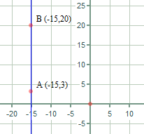

A vertical line is one the goes straight up and down, parallel to the y-axis of the coordinate plane. All points on the line will have the same x-coordinate. In the figure above, drag either point and note that the line is vertical when they both have the same x-coordinate.
A vertical line has no slope. Or put another way, for a vertical line the slope is undefined. As you drag the points above, notice that the slope indicator goes away when the line is exactly vertical.
The equation of a vertical line is
| x = a | |
| where: | |
| x | is the x coordinate of any point on the line |
| a | is where the line crosses the x-axis (x intercept). |

The points A and B on the line are at (-15,3) and (-15,20). The first coordinate in each pair is the x-coordinate which are -15, and -15. Since they are equal, the line is vertical.
Since the line crosses the x-axis at -15, the equation of the line is
In the interest of clarity in the applet above, the coordinates are rounded off to integers and the lengths rounded to one decimal place. This can cause calculatioons to be slightly off.
For more see Teaching Notes